Выберите вариант ответа или введите числовое значение.
Задача 1
Мяч с высоты $h_0 = 1\text{ м}$ был подброшен вертикально вверх еще на $h = 3\text{ м}$ и упал на землю. Путь и модуль перемещения мяча составляют:
Путь ($S$) — это общая длина траектории, которую пролетел мяч:
Вверх мяч пролетел: $s_1 = 3\text{ м}$.
Вниз (от максимальной точки до земли): $s_2 = 1\text{ м} + 3\text{ м} = 4\text{ м}$.
Весь путь: $S = s_1 + s_2 = 3 + 4 = 7\text{ м}$.
Модуль перемещения ($|\Delta\vec{r}|$) — это расстояние по прямой между начальной и конечной точками:
Начальная точка: 1 м над землей.
Конечная точка: 0 м (на земле).
Расстояние между ними: $|\Delta\vec{r}| = 1 - 0 = 1\text{ м}$.
Ответ: вариант 1 ($7\text{ м; } 1\text{ м}$).
Задача 2
Если материальная точка в течение времени $t = 20\text{ с}$ двигалась со скоростью, модуль которой $v = 4{,}0\text{ м/с}$, то модуль ее перемещения составил:
При равномерном прямолинейном движении модуль перемещения ($s$) находится как произведение модуля скорости ($v$) на время движения ($t$):
По арене цирка лошадь пробежала круг за время $t_1 = 30\text{ с}$. Путь, пройденный лошадью за $t_2 = 15\text{ с}$, больше модуля ее перемещения за $t_3 = 45\text{ с}$ движения:
Обозначим радиус арены цирка как $R$. Тогда длина одного полного круга равна $L = 2\pi R$. Лошадь пробегает этот круг за $t_1 = 30\text{ с}$.
Путь за $t_2 = 15\text{ с}$ :
Время 15 с — это ровно половина круга $\left(\frac{15}{30} = \frac{1}{2}\right)$.
Пройденный путь $S$ равен половине длины окружности:
$$S = \frac{L}{2} = \frac{2\pi R}{2} = \pi R$$
Модуль перемещения за $t_3 = 45\text{ с}$ :
Время 45 с — это полтора круга $\left(\frac{45}{30} = 1{,}5\right)$.
Сделав один полный круг, лошадь возвращается в начальную точку, а за оставшиеся полкруга оказывается на противоположной стороне арены.
Модуль перемещения $|\Delta\vec{r}|$ (расстояние по прямой от старта до финиша) равен диаметру окружности:
Материальная точка движется прямолинейно так, что в момент времени $t_1 = 4\text{ с}$ ее координата $x_1 = 6\text{ м}$, а к моменту времени $t_2 = 8\text{ с}$ ее координата $x_2 = -2\text{ м}$. Путь и проекция перемещения точки за $t = 2\text{ с}$ составляют:
Проекция перемещения ($\Delta r_x$) — это изменение координаты от начального до конечного момента:
Время встречи получилось отрицательным, что невозможно (так как движение рассматривается от момента $t = 0$ и далее в будущее). В начальный момент времени первая точка находилась в $x_1 = 10\text{ м}$ и двигалась вправо, а вторая — в $x_2 = 4\text{ м}$ и двигалась влево, то есть они изначально удалялись друг от друга.
Ответ: вариант 5 (точки вообще не встретятся).
Задача 6
На рисунке 1 представлен график зависимости координаты $x$ рыбонадзорного катера, курсирующего по Неману, от времени $t$. Если катер двигался вдоль оси $Ox$, то модуль перемещения $\Delta r$ катера за промежуток времени $\Delta t = 48\text{ мин}$, считая с момента начала отсчета времени, равен:
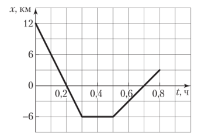
Рис. 1
За промежуток времени $\Delta t = 48\text{ мин} = 0{,}8\text{ ч}$ проекция перемещения катера равна изменению его координаты: $\Delta r_x = x - x_0 = -9\text{ км}$, где $x_0 = 12\text{ км}$, $x = 3\text{ км}$. Модуль перемещения катера $\Delta r = |\Delta r_x| = 9\text{ км}$.
Ответ: вариант 2 ($9\text{ км}$).
Задача 7
На рисунке 2 представлен график зависимости координаты $x$ сольпуги (самый быстрый в мире паук), движущейся вдоль оси $Ox$, от времени $t$. Путь $s$, пройденный сольпугой за промежуток времени $\Delta t = 12\text{ с}$, считая с момента начала отсчета времени, равен:
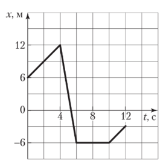
Рис. 2
Так как при прямолинейном движении путь равен модулю перемещения, то весь путь сольпуги найдем, сложив модули перемещений, совершенные на отдельных прямолинейных участках траектории: $s = \Delta r_1 + \Delta r_2 + \Delta r_3 + \Delta r_4$.
Если человек сначала прошел по прямолинейному проспекту путь $s_1 = 240\text{ м}$, затем повернул на перекрестке на улицу, расположенную перпендикулярно проспекту, и прошел по ней путь $s_2 = 70\text{ м}$, то за все время движения путь, пройденный человеком, больше его модуля перемещения $(s - \Delta r)$ на:
За все время движения путь человека $s = s_1 + s_2 = 310\text{ м}$, модуль его перемещения, определяемый по теореме Пифагора,
$$\Delta r = \sqrt{s_1^2 + s_2^2} = 250\text{ м}.$$
Ответ: $s - \Delta r = 60\text{ м}$ (вариант 4).
Задача 9
Тело равномерно движется вдоль оси $Ox$. Если в момент времени $t_1 = 2\text{ с}$ его координата $x_1 = 6\text{ м}$, а в момент времени $t_2 = 8\text{ с}$ — $x_2 = -24\text{ м}$, то модуль скорости $v$ движения тела равен:
Дважды запишем кинематический закон движения тела: $x_1 = x_0 + v_x t_1$ и $x_2 = x_0 + v_x t_2$. Из записанных уравнений найдем проекцию скорости:
График проекции скорости материальной точки, движущейся вдоль оси $Ox$, показан на рисунке 4. Модуль перемещения $\Delta r$ точки за промежуток времени $\Delta t = 6\text{ с}$, считая с момента начала отсчета времени, равен:
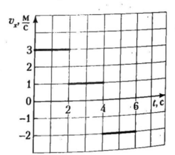
Рис. 4
Проекция перемещения материальной точки численно равна площади между графиком проекции скорости и осью времени (рис. 4): $\Delta r_{1x} = 6\text{ м}$, $\Delta r_{2x} = 2\text{ м}$ и $\Delta r_{3x} = -4\text{ м}$.
За промежуток времени $\Delta t$ модуль перемещения:
Велосипедист движется с постоянной скоростью по направлению оси $Ox$. На рисунке 5 показаны его положения в моменты времени $t_1 = 7\text{ с}$ и $t_2 = 11\text{ с}$. Кинематический закон движения велосипедиста имеет вид, указанный под номером:
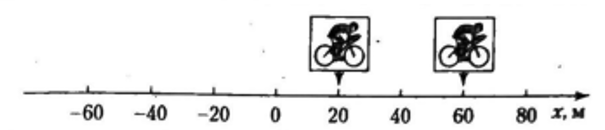
Рис. 5
Дважды запишем кинематический закон равномерного движения велосипедиста: $x_1 = x_0 + v_x t_1$ и $x_2 = x_0 + v_x t_2$, где $x_1 = 20\text{ м}$, $x_2 = 60\text{ м}$.
Определив из записанных уравнений проекцию скорости $v_x = 10\text{ }\frac{\text{м}}{\text{с}}$ и начальную координату $x_0 = -50\text{ м}$, запишем кинематический закон движения велосипедиста:
Мимо пассажира электропоезда, движущегося равномерно со скоростью, модуль которой $v_1 = 54\text{ км/ч}$, проехал пассажирский поезд длиной $l = 300\text{ м}$, который двигался по соседнему пути, обгоняя электропоезд. Если за время обгона электропоезд проехал относительно земли путь $s = 900\text{ м}$, то модуль скорости $v_2$ движения пассажирского поезда равен:
Пассажирский поезд обгонял электропоезд в течение промежутка времени $\Delta t = \frac{s}{v_1}$ с относительной скоростью $v_0 = v_2 - v_1$. Учитывая, что относительное расстояние, которое проехали поезда друг относительно друга, $l = v_0 \Delta t$, из записанных уравнений найдем ответ:
Плот равномерно плывет по реке со скоростью, модуль которой $v_1 = 6{,}0\text{ км/ч}$. Если человек идет поперек плота (перпендикулярно берегу) со скоростью, модуль которой относительно плота $v_2 = 8{,}0\text{ км/ч}$, то модуль скорости $v$ движения человека в системе отсчета, связанной с берегом, равен:
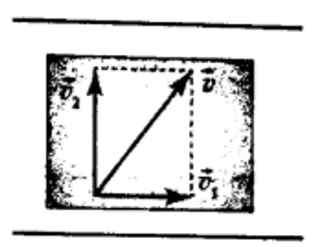
Рис. 385
На рисунке 385 показаны: скорость $\vec{v}_1$ плота относительно берега, скорость $\vec{v}_2$ человека относительно плота и скорость $\vec{v}$ человека относительно берега. Из прямоугольного треугольника следует: $v = \sqrt{v_1^2 + v_2^2}$. Подставив данные задачи, получим:
$$v = 10\text{ }\frac{\text{км}}{\text{ч}}.$$
Ответ: вариант 4 ($10\text{ км/ч}$).
Задача 14
Во время миграции антилопы гну переплывают реку Мара шириной $L = 40\text{ м}$, выдерживая курс перпендикулярно течению. Модуль скорости течения воды в реке $v_1 = 1{,}5\text{ м/с}$. Если антилопу снесло вниз по течению на расстояние $l = 30\text{ м}$, то модуль скорости $v$ ее движения относительно берега равен:
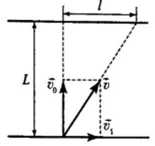
Рис. 386
На рисунке 386 показаны: скорость $\vec{v}_1$ воды в реке, скорость $\vec{v}$ антилопы относительно берега и скорость $\vec{v}_0$ антилопы относительно воды. Из подобных прямоугольных треугольников следует:
$$\frac{v_1}{v} = \frac{l}{\sqrt{L^2 + l^2}}.$$
Отсюда найдем ответ:
$$v = 2{,}5\text{ }\frac{\text{м}}{\text{с}}.$$
Ответ: вариант 3 ($2{,}5\text{ м/с}$).
Задача 15
В безветренную погоду капли дождя оставляют на окне равномерно движущегося автобуса следы, составляющие с горизонтом угол $\varphi = 60^\circ$. Если модуль скорости движения автобуса $v_1 = 18\text{ м/с}$, то модуль скорости $v_0$ движения капель относительно автобуса равен:
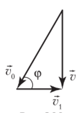
Рис. 388
На рисунке 388 показаны: скорость $\vec{v}_1$ движения автобуса, скорость $\vec{v}$ капель относительно поверхности земли и скорость $\vec{v}_0$ капель относительно автобуса. Из прямоугольного треугольника следует:
$$v_0 = \frac{v_1}{\cos\varphi}.$$
Подставив данные задачи, получим:
$$v_0 = 36\text{ }\frac{\text{м}}{\text{с}}.$$
Ответ: вариант 5 ($36\text{ м/с}$).
Задача 16
Первую часть пути $s_1 = 69\text{ км}$ автомобиль проехал за промежуток времени $\Delta t_1 = 1{,}0\text{ ч}$. Если остальную часть пути, двигаясь со скоростью, модуль которой $v_2 = 102\text{ км/ч}$, он проехал за промежуток времени $\Delta t_2 = 30\text{ мин}$, то средняя скорость $\langle v \rangle$ движения автомобиля на всем пути равна:
Вторая часть пути автомобиля $s_2 = v_2 \Delta t_2$. Средняя скорость движения автомобиля на всем пути:
Если электропоезд «Stadler» первую половину пути ехал равномерно и прямолинейно со скоростью, модуль которой $v_1 = 120\text{ км/ч}$, а вторую — со скоростью, модуль которой $v_2 = 80\text{ км/ч}$, то средняя скорость $\langle v \rangle$ электропоезда на всем пути равна:
Первую половину пути электропоезд проехал за промежуток времени $\Delta t_1 = \frac{s}{2v_1}$, вторую — за промежуток времени $\Delta t_2 = \frac{s}{2v_2}$, где $s$ — весь путь. Средняя скорость движения электропоезда на всем пути:
Автомобиль в течение промежутка времени $\Delta t_1 = 40{,}0\text{ мин}$ двигался на север со скоростью, модуль которой $v_1 = 60{,}0\text{ км/ч}$. Затем он повернул на восток и проехал путь $s_2 = 60{,}0\text{ км}$. После этого автомобиль снова повернул на север и еще проехал путь $s_3 = 40{,}0\text{ км}$. Модуль перемещения $\Delta r$ автомобиля за все время движения равен ... км.
Введите модуль перемещения в километрах ($\text{км}$):
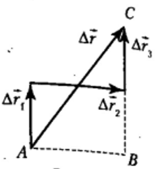
Рис. 389
Из прямоугольного треугольника $ABC$ (рис. 389) следует, что модуль перемещения автомобиля:
По шоссе равномерно и прямолинейно движется длинная колонна автомобилей. Расстояния между соседними автомобилями одинаковы. Движущийся в том же направлении мотоциклист обнаружил, что если модуль его скорости равномерного движения $v_1 = 36\text{ км/ч}$, то через каждый промежуток времени $\Delta t_1 = 10\text{ с}$ его обгоняет автомобиль из колонны, а при равномерном движении со скоростью, модуль которой $v_2 = 90\text{ км/ч}$, через каждый промежуток времени $\Delta t_2 = 20\text{ с}$ он обгоняет автомобиль из колонны. Если мотоциклист остановится, то автомобили из колонны будут проезжать мимо него через промежутки времени $\Delta t$, равные ... с.
Введите промежуток времени в секундах ($\text{с}$):
Составление уравнений движения
Случай 1: Мотоциклист едет со скоростью $v_1$, и автомобили его обгоняют. Это значит, что скорость колонны больше скорости мотоциклиста ($v > v_1$). Скорость автомобилей относительно мотоциклиста равна $(v - v_1)$. За время $\Delta t_1 = 10\text{ с}$ автомобиль успевает сократить и преодолеть расстояние $L$:
$$L = (v - v_1) \cdot \Delta t_1$$
Случай 2: Мотоциклист едет со скоростью $v_2$ и сам обгоняет автомобили колонны ($v_2 > v$). Скорость мотоциклиста относительно автомобилей равна $(v_2 - v)$. За время $\Delta t_2 = 20\text{ с}$ он проезжает расстояние $L$ от одного автомобиля до другого:
$$L = (v_2 - v) \cdot \Delta t_2$$
Так как расстояние $L$ между машинами одинаково, приравняем правые части уравнений:
Теперь найдем расстояние $L$, подставив $v$ в первое уравнение:
$$L = (20 - 10) \cdot 10 = 100\text{ м}$$
Если мотоциклист остановится, его скорость будет равна нулю. Автомобили будут проезжать мимо него со своей собственной скоростью $v$, преодолевая расстояние $L$ за искомый промежуток времени $\Delta t$:
$$L = v \cdot \Delta t \implies \Delta t = \frac{L}{v}$$
$$\Delta t = \frac{100\text{ м}}{20\text{ м/с}} = 5\text{ с}$$
Ответ: $5\text{ с}$.
Задача 20
На рисунке 6 представлены графики движения вдоль оси $Ox$ автомобиля (график I) и мотоцикла (график II). Модуль скорости $v_{12}$ движения автомобиля относительно мотоцикла равен ... м/с.
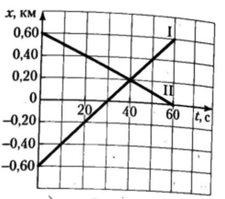
Рис. 6
Введите модуль относительной скорости в метрах в секунду ($\text{м/с}$):
Используя график (рис. 6), найдем проекции скорости движения автомобиля и мотоцикла: $v_{\text{I}x} = 20\text{ }\frac{\text{м}}{\text{с}}$ и $v_{\text{II}x} = -10\text{ }\frac{\text{м}}{\text{с}}$.
Так как автомобиль и мотоцикл движутся навстречу друг другу, то:
Если расстояние между двумя лодочными станциями моторная лодка (при неизменной мощности двигателя) проплывает по течению реки за промежуток времени $\Delta t_1 = 20\text{ мин}$, а против течения — за промежуток времени $\Delta t_2 = 30\text{ мин}$, то промежуток времени $\Delta t$, за который такое же расстояние лодка проплывает в стоячей воде, равен ... мин.
Введите время в минутах ($\text{мин}$):
Пусть расстояние между лодочными станциями равно $l$, модуль скорости движения лодки относительно воды $v_1$, модуль скорости течения воды $v_2$. Тогда выполняются равенства: $l = (v_1 + v_2)\Delta t_1$, $l = (v_1 - v_2)\Delta t_2$, $l = v_1 \Delta t$. Из записанных уравнений найдем ответ:
При переправе на моторной лодке через реку шириной $h = 60\text{ м}$ лодочнику надо попасть из точки $A$ в точку $B$ (рис. 7). Расстояние $l = 80\text{ м}$. Лодочник управляет лодкой так, что она движется вдоль прямой $AB$ со скоростью, модуль которой относительно берега $v = 8\text{ }\frac{\text{м}}{\text{с}}$. Если модуль скорости течения воды $v_{\text{т}} = 2{,}8\text{ }\frac{\text{м}}{\text{с}}$, то модуль скорости лодки $v_0$ относительно воды равен ... м/с.
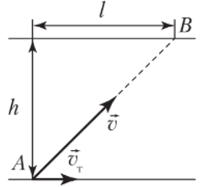
Рис. 7
Введите скорость лодки относительно воды в метрах в секунду ($\text{м/с}$):
По закону сложения скоростей скорость лодки относительно берега равна векторной сумме скорости лодки относительно воды и скорости течения:
В безветренную погоду беспилотный самолет летел точно на север со скоростью, модуль которой $v_1 = 8\text{ }\frac{\text{м}}{\text{с}}$. Затем подул северо-западный ветер под углом $\alpha = 60^\circ$ к меридиану. Если модуль скорости ветра $v_2 = 3\text{ }\frac{\text{м}}{\text{с}}$, то модуль скорости $v$ движения самолета относительно земли при ветре равен ... м/с.
Введите скорость относительно земли в метрах в секунду ($\text{м/с}$):
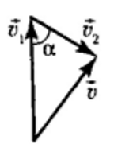
Рис. 391
На рисунке 391 показаны скорость $\vec{v}_1$ беспилотного самолета относительно воздуха, скорость $\vec{v}_2$ ветра относительно земли и скорость $\vec{v}$ самолета относительно земли. Используя теорему косинусов, найдем ответ: